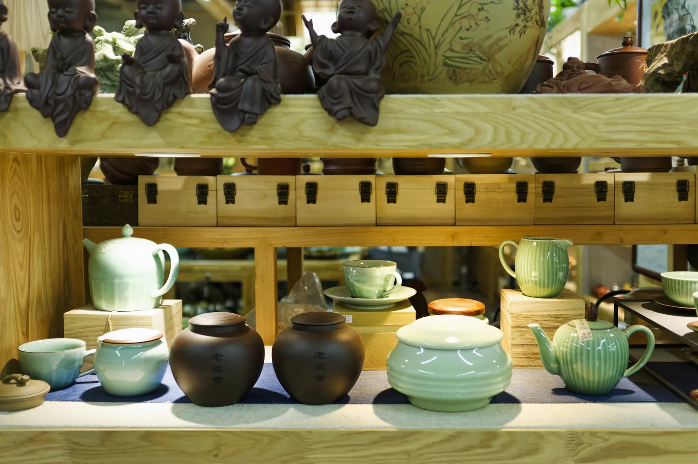
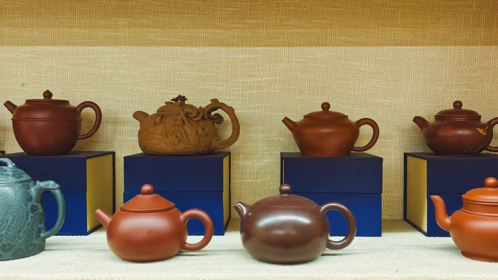
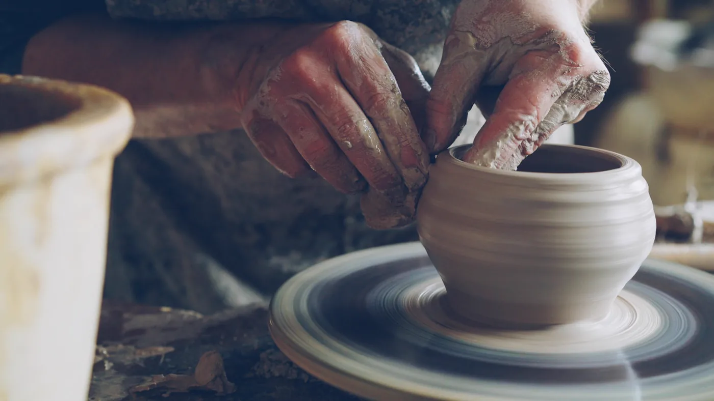
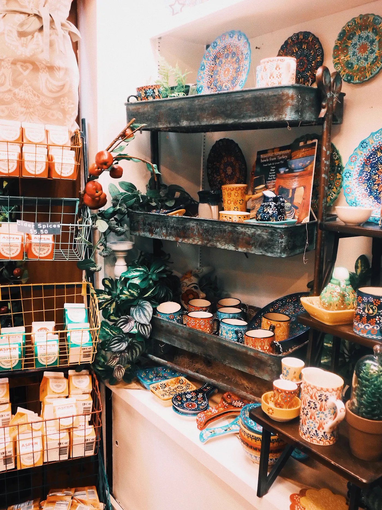
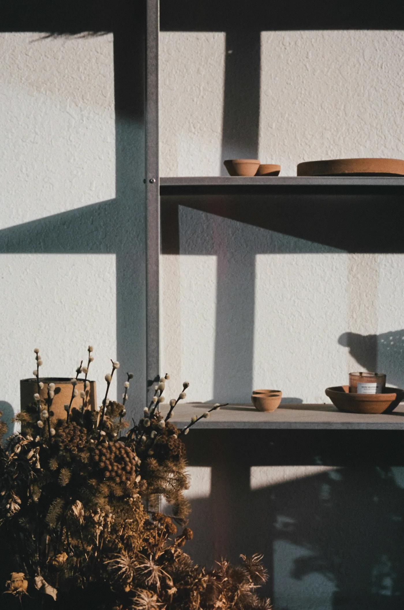
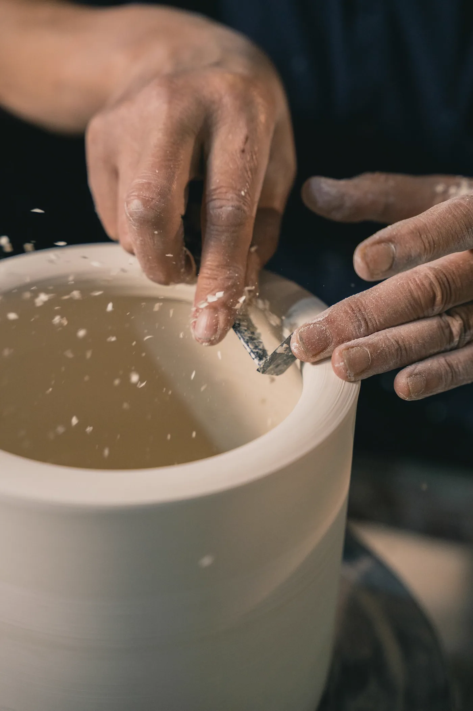

Table

Showroom céramique à Paris
Storehouse
Pièces en grès, objets sculptés, séries courtes. Un showroom vivant pour composer une table, une étagère, une lumière.
Une maison de terre, de lumière et de gestes lents. Chaque visite commence par la matière.
- 120+
- pièces en showroom
- 14
- artisans invités
- 3
- cuissons par mois




Collections vivantes
Une sélection qui respire la main.
Filtrez par usage, puis passez en showroom pour toucher la matière, comparer les émaux et choisir à la lumière du jour.
Atelier
Bol tourné
Edition limitéeVases
Mur vivant
Pièces signées
Atelier
Grand grès
Commande possibleTable
Service nuage
Sur réservationVases
Fenêtre chaude
Pièces uniquesAtelier ouvert
Le geste donne le ton.
Le showroom garde une zone atelier visible. On y explique les terres, les émaux, les formes et les usages avant chaque achat.
- 01 Sélection Nous affinons les formes, les textures et les teintes selon votre espace, votre lumière et vos usages.
- 02 Réservation Votre pièce est mise de côté 48 h, avec la possibilité de demander une variation d'atelier.
- 03 Installation Nous vous guidons dans les associations: table, étagère, console, lumière et volumes autour.
Galerie photo
Plus de matière, plus de lumière, plus de présence.
Visite privée
Passez choisir les pièces à la lumière du jour.
Envoyez un message pour réserver un créneau, préparer une table complète ou demander une commande spéciale.